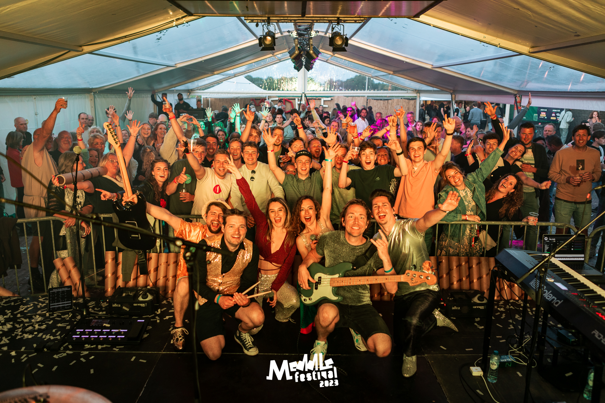
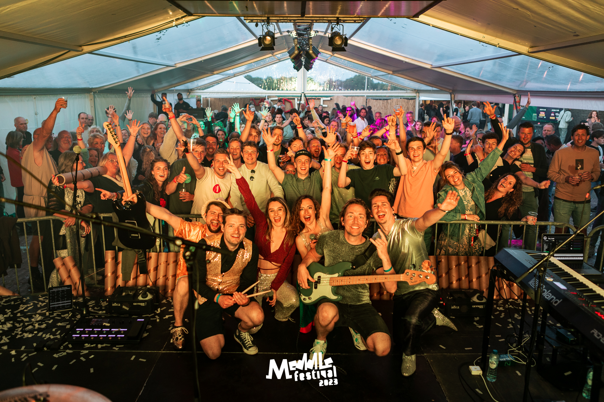

Geschiedenis
Lang geleden, in de jaren 70 ontstond er een idee. Wat begon als een uitbreiding van een lokale sociëteit, groeide dankzij een handjevol enthousiaste inwoners uit Rijpwetering en Oud Ade uit tot iets groters. Iets gezelligers. Iets wat bleef hangen.
Dat idee werd Meddle Festival.
Al snel werd het een jaarlijks moment waar je gewoon bij wilde zijn. Steeds meer mensen wisten de weg naar Meddle te vinden, maar één ding veranderde nooit: de dorpse sfeer. Geen poespas, wel goede muziek, gezellige mensen en een terrein waar iedereen zich welkom voelde. Door de jaren heen groeide het festival mee. Meer bezoekers, meer lokale en regionale artiesten, maar altijd met hulp van vrijwilligers die elk jaar weer klaarstaan. In 2023 vierden we een bijzondere mijlpaal: de 50e editie van Meddle Festival. En eerlijk is eerlijk, daar zijn we best een beetje trots op.
Onze missie
Meddle Festival draait om samen genieten. Om muziek, lekker eten en drie dagen gezelligheid zonder drempels. We willen een festival neerzetten dat betaalbaar, toegankelijk en gezellig is. Of je nu voor het eerst komt of al jaren vaste prik bent, bij Meddle Festival hoor je erbij. Jong, oud en alles daartussenin. Met een gevarieerd programma, een relaxte sfeer en een grote groep enthousiaste vrijwilligers zorgen we elk jaar weer voor een weekend waar je met een glimlach op terugkijkt. Geen gedoe, gewoon goed geregeld en vooral: gezellig.
Oost West Meddle Fest
Dit jaar krijgt het Meddle Festival een eigen thema: Oost West Meddle Fest. Het terrein krijgt een subtiele knipoog naar het Wilde Westen. Denk aan cowboyhoeden en een vleugje saloon-gevoel. De bar en eetstands doen mee, het podium krijgt extra sfeer maar houdt nog steeds de oude vertrouwde sfeer.
Want hoe wild het ook wordt… het moet natuurlijk wel Meddle blijven ;)
 
